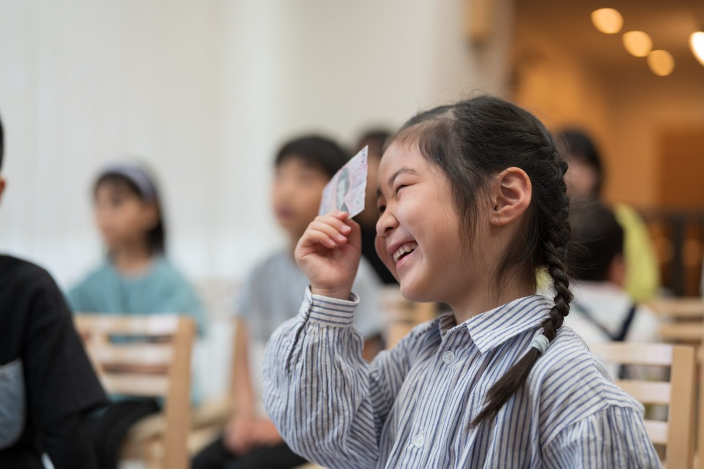
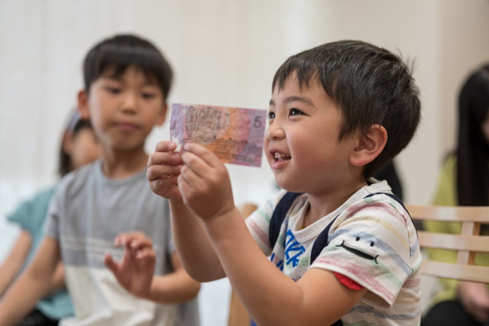
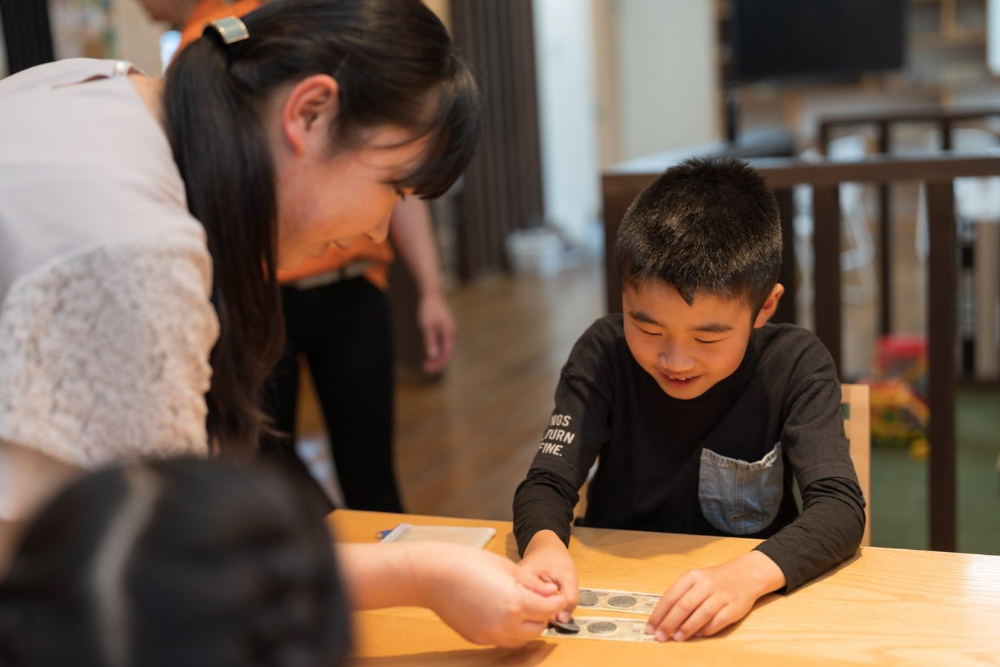
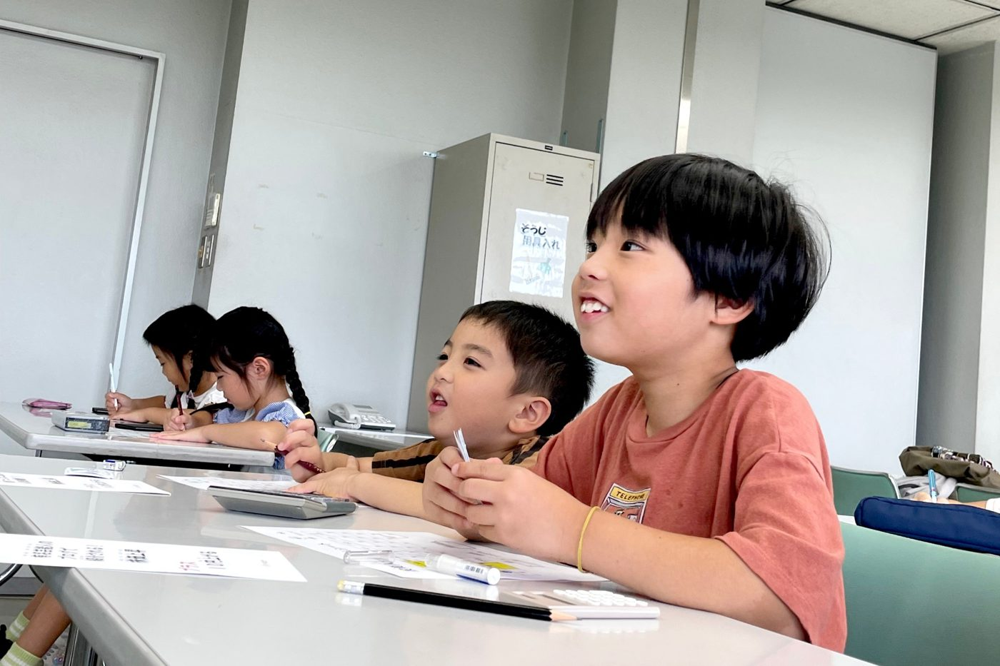

毎回、お金クイズ！
そして、こども店長に
クイズでお金に興味を持ち、自分のお店を準備して販売。お金の大切さと、働くこと・「ありがとう」のつながりを体験します。
親子で学ぶお金の体験教室
キッズマネースクール ビギナークラス

お金の価値観は、
小さいうちの体験で育つ。
子どもはお金クイズ＆店長体験。
保護者は「いつから・いくら・どう渡す？」を学ぶ。
参加特典：お小遣い教育セットを無料プレゼント
お近くの開催日程を選ぶ
次回開催
近くの開催日程を見る大阪・兵庫・広島の24回を募集中・各回先着順
キッズマネースクールは、多くのメディアで紹介されています
親子で学ぶお金の体験教室
クイズでお金に興味を持ち、自分のお店を準備して販売。お金の大切さと、働くこと・「ありがとう」のつながりを体験します。
お子さまが開店準備をしている時間に、保護者向け講習を実施。おこづかい教育の３つのテーマをすべて扱います。
当日の学びをきっかけに、帰ってからも親子でお金の話を。おうちでのおこづかい教育にお役立てください。
はじめてのキッズマネースクールは、
ビギナークラスから。
だから、キッズマネースクール

お金の話は、言葉で説明してもなかなか子どもに届きません。 キッズマネースクールでは、子どもが自分で働き、自分で売って、お金を受け取る体験を通して、
お金は汚いものではなく、
「ありがとう」と交換する
すばらしいもの
だということを、自然と感じてもらいます。
毎回のお金クイズ ＋ おみせやさんごっこ
お金クイズと、こども店長の体験がセット。
お店の準備中には、保護者向けのおこづかい教育講習も行います。
色えんぴつやはさみを使って、自分のお店を準備。この時間に保護者向け講習を行います。

STEP 2商品をいくらで売る?値段を自分で考えてつけます。
こども店長としてお店をOPEN!売る・買うを体験します。

STEP 4働いてもらうお給料の大切さと、おうちの人への感謝を学びます。
参加した親御さんの声
「お金は汚い」が変わりました
昔から親に『お金は汚い』と言われてきたので、考え方が180度変わりました。
大阪の親御さん
小さなこどもでも大丈夫でした
1年と年中さんなので難しいかな?と思いながら申し込みましたが、子どももとても興味深そうに先生の話を聞いていて良かったです。
福岡の親御さん
「ありがとう」が好きになりました
お店屋さんになってお客様と接し、物を売るという経験が出来、本人も楽しかったようです。「ありがとう」という言葉が好きになったようです!
名古屋の親御さん
「パパのおかげでいただきます」が伝わりました
なぜ、パパのお陰でいただきますなのか、分かったと思います。
仙台の親御さん
出典:キッズマネースクール公式サイト「親子の声」(一部抜粋)
はじめての方へ
毎回のお金クイズと、開店準備・販売・ふりかえり。数が数えられる4〜10歳のお子さまと保護者が対象です。
いつから始める？ いくら渡す？ どう渡す？ この３つをすべて扱います。帰宅後に「わが家のおこづかいルール」を親子で考えるきっかけに。
キッズマネースクール認定講師1名と、FP(ファイナンシャルプランナー)有資格者1名が担当します。
主催・地域での開催実績
主催：キッズマネースクール ビギナークラス
吹田市・茨木市・豊中市・川西市の教育委員会の後援名義で開催した実績があります。
2026年7月26日〜8月11日／吹田市文化会館・豊一市民センター・千里丘市民センター・千里市民センター
「令和８年６月２４日付け ８吹地ま第47-15号で後援等を受けた事業」「吹田市教育委員会後援等終了報告書」2026年8月12日付より
2026年6月20日／茨木市文化・子育て複合施設 おにクル
「2026年5月1日付け茨教社第69-006号において後援等の承認を受けた事業」「茨木市教育委員会後援等承認事業報告書」2026年8月10日付より
2025年12月7日／千里文化センターコラボ 多目的スペース
「貴教育委員会の後援名義使用の承認を得て開催いたしました事業」「豊中市教育委員会後援名義使用事業実施報告書」2026年1月18日付より
2025年12月6日／キセラ川西プラザ
「後援名義の使用許可を受けた事業について、下記のとおり実施しましたので報告します。」「川西市教育委員会後援名義使用事業完了報告書」2026年1月18日付より
主催者作成の事業報告書より必要部分を引用（改行・空白を整理）。過去の開催実績であり、今後のすべての開催回の後援を示すものではありません。
参加費無料
お子さまの体験・保護者向け講習・参加特典まで、すべて無料です。
各回先着順です。
お近くの会場を選んでご予約ください。
参加費無料／約60〜70分／お金クイズ・店長体験・保護者向け講習つき
お小遣い教育セットを無料プレゼント
「予約」を押すと、選んだ日程が入力されたフォームが開きます。
予約フォームと日程を照合済み（確認日：）
| 参加費 | 無料（保護者向け講習・お小遣い教育セットつき） |
|---|---|
| 対象 | 4〜10歳のお子さまとその保護者 ※数が数えられればOKです |
| 時間 | 60〜70分(参加人数によって変わります) |
| 持ち物 | 色えんぴつ、はさみ |
| 講師 | キッズマネースクール認定講師 1名/FP有資格者 1名 |
| 主催 | キッズマネースクール ビギナークラス |
参加費無料・しつこい勧誘は一切ありません
はい、毎回実施します。対象は4〜10歳。数が数えられれば参加できます。お金クイズと、お店の準備・販売を通して学びます。
おこづかいを「いつから始めるか」「いくら渡すか」「どう渡すか」をすべて扱います。お子さまが開店準備をしている時間に行います。
参加特典として無料でプレゼントします。ご家庭でのおこづかい教育にお役立てください。
各日程の「会場アクセス」を開くと、住所と地図を確認できます。お部屋や駐車場など不明な点は、主催の米山（070-8352-4195）へお問い合わせください。
参加費は無料です。しつこい勧誘は一切ありませんので、安心してご参加ください。
はい。対象は4〜10歳で、数が数えられれば大丈夫です。
大丈夫です。講師が一人ひとりに声をかけながら進めるので、はじめてのお子さまも最後まで楽しめます。
60〜70分です(参加人数によって少し変わります)。
保護者の方もご一緒にご参加ください。お子さまがお店の準備をしている間、保護者の方にはおこづかい教育の講習のお時間があります。
はい。予約フォームで、お子さまの参加人数(1〜4名)をお選びください。
予約フォームに入力した電話番号あてに、24時間以内にSMS(ショートメッセージ)で予約完了のお知らせが届きます。
参加費無料
各回先着順